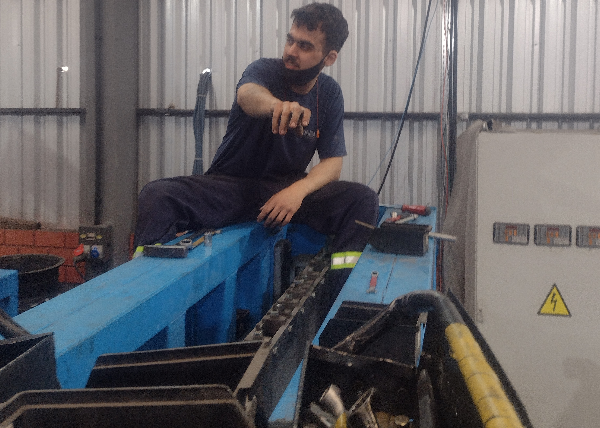

Um pouco sobre mim
Olá! Sou Maurício Prado, estudante de programação na Alura, músico,
projetista, gestor, mecânico e podcaster. Bastante coisa, né?
Quer conhecer mais?
Acesse meus dados

Engenheiro / Mecânico
Trabalhei 10 anos dentro da indústria, começando nas funções de limpeza e indo até a gestão e projetos de engenharia mecânica.
-
Gestão -
Desensolvi um sistema utilizando Google sheets e Google forms para controle de toda produção, manutenções preventivas e corretivas, matéria-prima, desperdício e almoxarifado.
-
Projetista -
Com conhecimentos em desenho técnico, engenharia (cursei Engenharia mecânica por um tempo) e mecânica de máquinas, ajudei no desenvolvimento de diversos componentes para máquinas, incluindo um retrofit completo de uma das máquinas da empresa. Também no padrão de desenhos para vários projetos de produtos
-
Mecânico -
Desde a operação até o treinamento de operadores e manutensores da empresa, confeccionei diversos manuais e criei muitos padrões de manutenção e produção da empresa

Programação
Comecei na Alura em 2022, após o trabalho sempre tentava estudar 2-4h por dia, nem sempre era possível e, a medida que as demandas iam aumentando, eu diminuía o ritmo dos estudos, porém, no início de 2023 decidi mudar a carreira e focar em programação. Na Alura, já estudei:
-
Lógica de programação -
Foi onde iniciei, e fora da Alura! Minha melhor nota na faculdade foi em Lógica de programação, lá conheci a área. Na Alura conclui diversos cursos de lógica com jogos como pong, frogger e tiro ao alvo
-
HTML e Css -
Bem, essa página que você está no momento foi feita por mim! Algo simples, para tentar aplicar uma parte dos conhecimentos que obtive na Alura e em outras imersões que fiz nos últimos tempos!
-
Javascript (Fron-end e Back-end) -
Finalizei uma formação de Js para Back-end e consegui aplicar um pouco do sistema que fiz para minha antiga empresa lá! Com cadastros de funcionários e almoxarifado. No front , é o que estou estudando no momento! Com o tempo, aprimorarei essa página com várias funções!
-
Java -
Utilizei Java para entender vários conceitos dentro da programação e aprimorar minha lógica. Consegui criar quase toda empresa que trabalhava dentro dele.
-
MySql -
Aprendi a base para poder criar, manipular e pesquisar dentro de bancos de dados, conseguindo simular todo sistema de uma empresa dentro dele, com controle de funcionários, almoxarifado e matéria-prima.
Música
Comecei a tocar violão aos 11 anos com meu irmão, pegava "emprestado" os
instrumentos e fazia meu som… aos poucos fui evoluindo e conseguindo comprar os meus, mas, só realmente
estudei música aos 27 anos, em uma mentoria de guitarra com
Jader Scouto .
Nunca pretendi trabalhar com música, apesar de já ter tido algumas bandas e
tocado na noite. Música é minha paixão, o que realmente me acalma em dias ruins e ajuda a me expressar.
Podcaster
Em 2022, comecei um Podcast chamado 03AM com meu amigo __k4os, a ideia é trazer assuntos da madrugada, coisas que pensamos nas noites de insônia, durante o banho, voltando do trabalho, mas trazer esses assuntos com informações sérias sobre eles, mas com muita viagem e irreverência